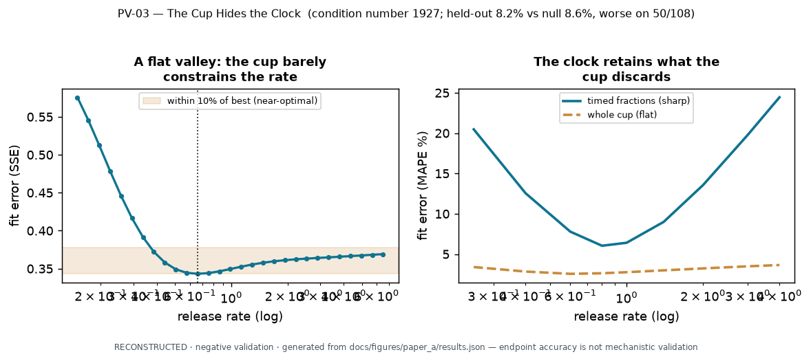

{kind=link}
Loading the generated data…
Summary (JavaScript is off)
This page is interactive with JavaScript enabled. The complete result — every number and every caveat — is in the generated static text summary and the summary image. In short: fitting an extraction model to whole-cup endpoints leaves its hidden inventory and release rate practically non-identifiable, yet the endpoint still predicts reasonably and barely beats a level-only null — so endpoint accuracy is not evidence that the mechanism transferred. Timed fractions and an independent inventory measurement recover what the cup discards.

Fitting an extraction model to a whole-cup endpoint leaves two hidden things — how much soluble coffee is available (inventory) and how fast it releases (rate) — practically non-identifiable: the fit-error valley is nearly flat along a curve where the two trade off. On the caffeine objective the condition number is · and the inverse-curvature coupling is · (this is objective-surface geometry, not a statistical parameter correlation).
1 · Same cup, different hidden parameters
Move the release rate. At each rate the best-fit inventory adjusts so the final cup stays nearly the same — the fit barely changes across most of the tested range (· of it is near-optimal, and the upper end is right-censored by the tested domain).
Show the numbers behind this plot (text table)
2 · Keep or throw away the clock
A final cup collapses the whole time sequence into one endpoint. Timed fractions retain information about how quickly material appeared.
·
Show the numbers behind this plot (text table)
3 · Prediction is not identification
Across held-out grinds the mechanistic model predicts the cup about as well as simply carrying the fitted concentration level — it adds little skill over that null.
mechanistic MAPE · vs level-only null ·
inventory and rate are practically non-identifiable at the endpoint (condition number ·)
worse than the null on · of · held-out points
·
4 · What measurement would help?
- Timed fractions — constrain the release rate (the early slope), which the endpoint discards.
- Independently measured inventory — pins the amount available; here an inventory of about · g/L collapses the valley to an implied rate near · (same-campaign, not an independent external check).
- Multiple controlled conditions — a shared fit must hold across grinds, not just one.
- A simple null baseline — a mechanism must beat carrying the level.
Better measurement design, not a more confident endpoint fit, is what distinguishes hidden mechanisms.
What this does not prove
- Not that the mechanism transferred — endpoint accuracy is not mechanistic validation.
- Not structural identifiability, and not a statistical confidence interval (the 10% set is a tested-domain threshold; the coupling is objective geometry, not a correlation).
- Not that timed fractions uniquely identify the true mechanism — fraction agreement here is in-sample verification, not independent validation.
- No recipe optimization, no flavor prediction, no private data. Conditional on one model, one campaign, one observation operator, one objective, and the tested domain (right-censored).